/var/folders/wb/035mswds69j2l_sw8yg6tdjw0000gr/T/ipykernel_66542/585749580.py:4: RuntimeWarning: covariance is not symmetric positive-semidefinite.
X = np.random.multivariate_normal(mean,cov,n)Here I will outline my personal preferences for best plotting practices for 2D scatter plots using Matplotlib. I will be initialising the plot as demonstrated in my previous post.
To start with I will simulate a thousand data points that may have come from a dimensionality reduction technique such as t-SNE.
This is as simple and basic as a plot can be in Matplotlib.
fig,ax = plt.subplots(1,1)
ax.scatter(X[:,0],X[:,1]);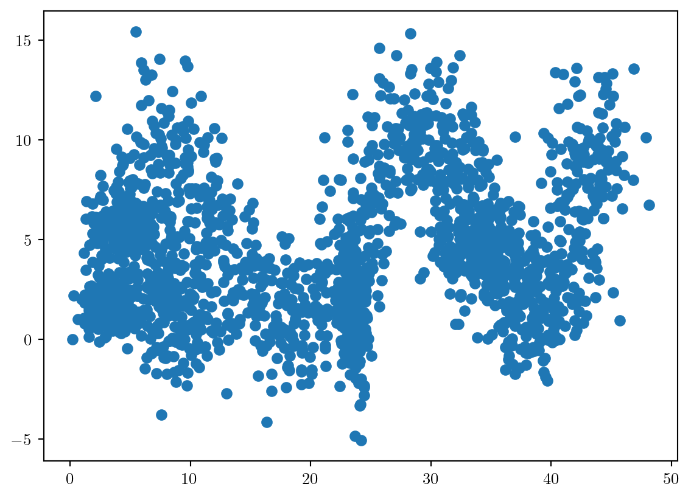
First of all we need to size and scale the plot appropriately.
By default, the aspect-ratio of the axis will not be equal. If the axis have similar units or meaning this can provide misleading interpretation of the data. We will fix this first.
Always set the aspect ratio to be equal if both quantities are comparable in meaning and magnitude using ax.set_aspect('equal')
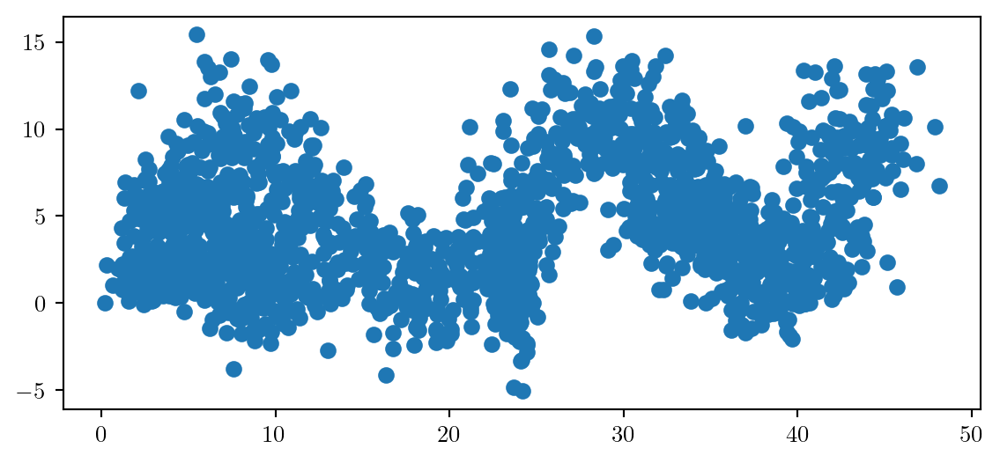
We will now add appropriate labels, with a legible fontsize to our axis, using LaTeX where appropriate.
ax.set_xlabel('$x_1$',fontsize=20)
ax.set_ylabel('$x_2$',fontsize=20)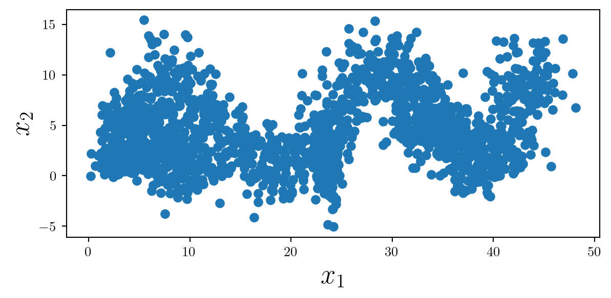
With so many data points, adding some opacity can help the reader interpret the density. Note that reducting the opacity affects the fill and the edge of each point differently.
At this point I will set the color to black, considering we have no separable classes (yet).
Always consider removing the edge of each scatter-point if decreasing the opacity to make the plot look cleaner.
ax.scatter(X[:,0],X[:,1],color='k',linewidth=0,alpha=0.2);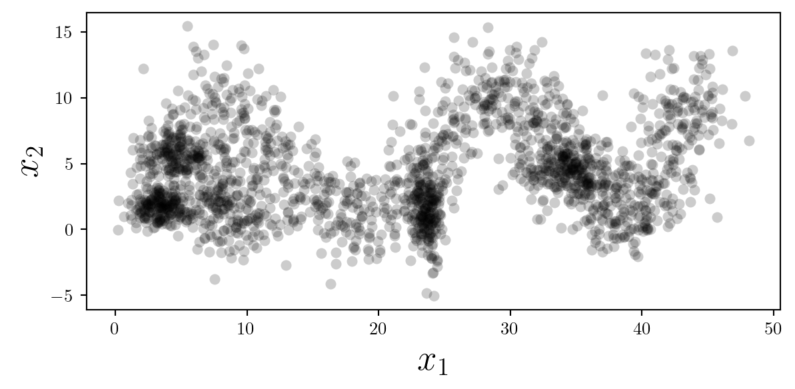
Alternatively, the marker size may be changed to a smaller value and the opacity set to 1. This provides a less clear image of the distribution of points, but a clearer view of the specific locations of data.
ax.scatter(X[:,0],X[:,1],color='k',s=3);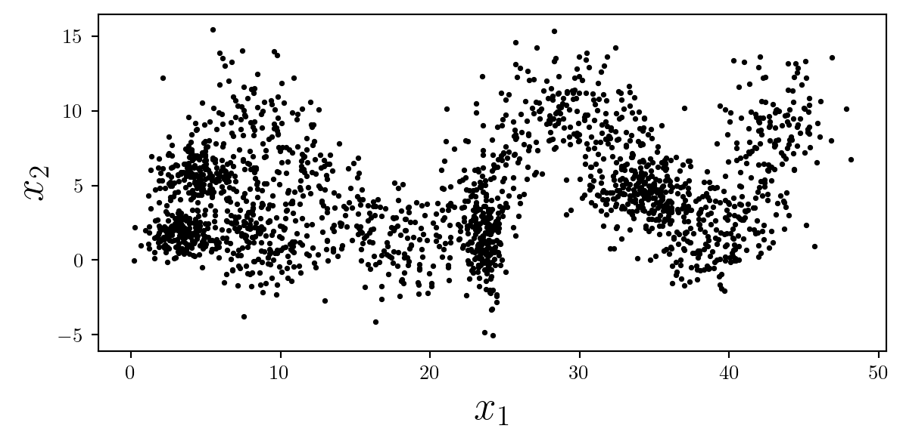
Despite these plots containing the same data, they are visually different and tell different stories to the reader. As always…
It is important to consider what message you wish to convey, and how visual elements such as opacity, and marker size support this message.
If the specific location of data is critically important, the ‘+’ symbol may be used. When scaling up the size of this marker appropriately, make sure to reduce the linewidth to ensure that the symbol isn’t too thick.
ax.scatter(X[:,0],X[:,1],color='k',s=50,linewidth=0.75,marker='+');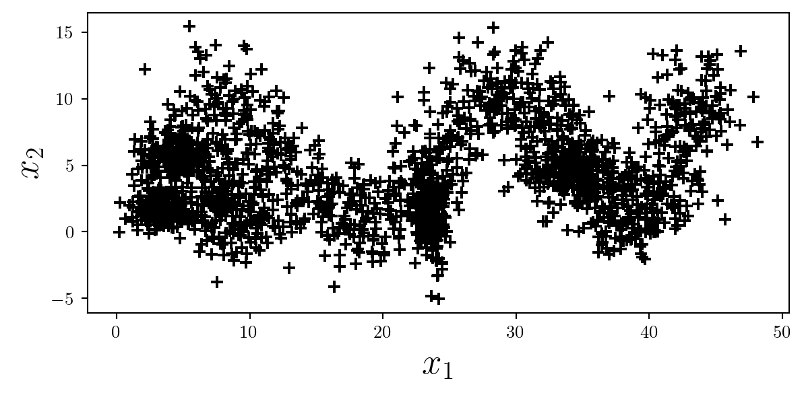
It may be helpful in this situation to ensure the grid is turned on, but remember to ensure it is behind other elements by using ax.set_axisbelow(True).
ax.grid(alpha=0.5)
ax.set_axisbelow(True)What if we have different classes that we want to highlight? For now I will plot these clusters in the tab: colour pallette.
for i in range(6):
X = clusters[i]
ax.scatter(X[:,0],X[:,1],s=20,alpha=0.75,linewidth=0);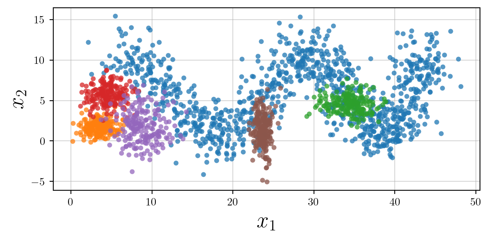
However, we now need to label our clusters. Adding a legend inside the plot will make it cluttered.
Therefore we can add the legend outside the plot itself, on the right, above or below.
Because there are a reasonable number of labels, I will place the legend just above the plot in a single row, ensuring that the rounded frame is turned off.
ax.legend(loc='upper center', bbox_to_anchor=(0.5, 1.15),
ncol=5,frameon=False)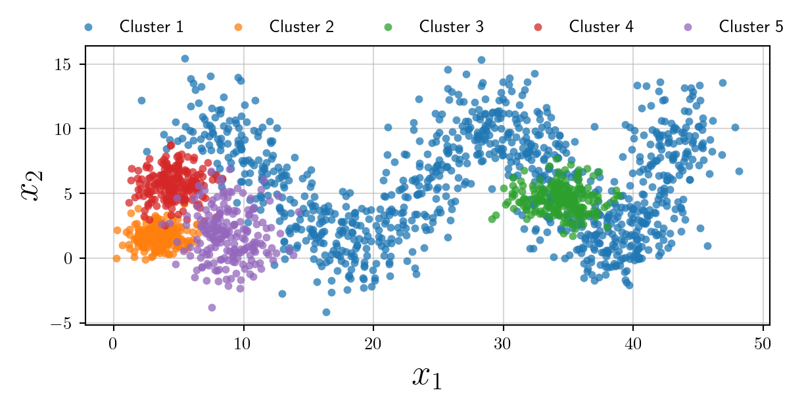
How to make the plot accessible to people who have colour-blindness? We may use different markers…
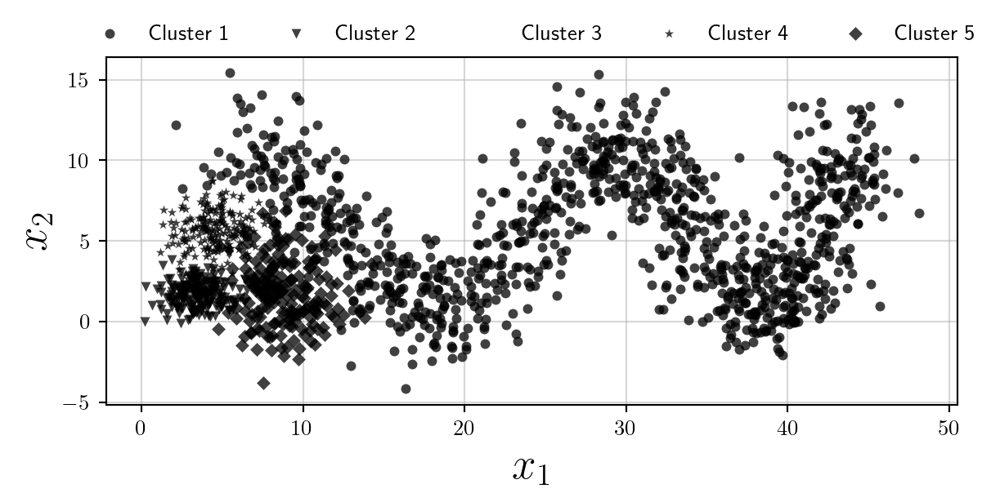
However clearly the plot becomes illegible. I think in the scenario where colours are not desired (or their use should be minimised) the best option is to use multiple subplots, and opacity as follows:
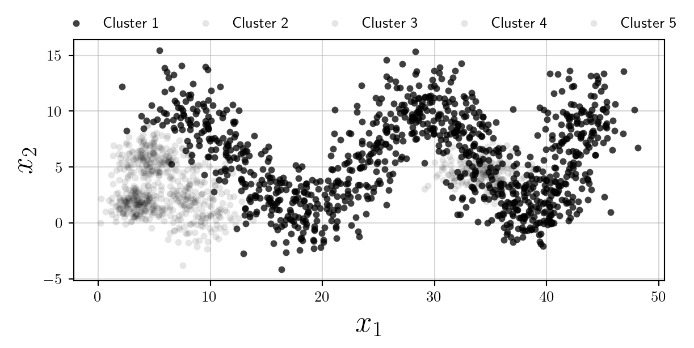
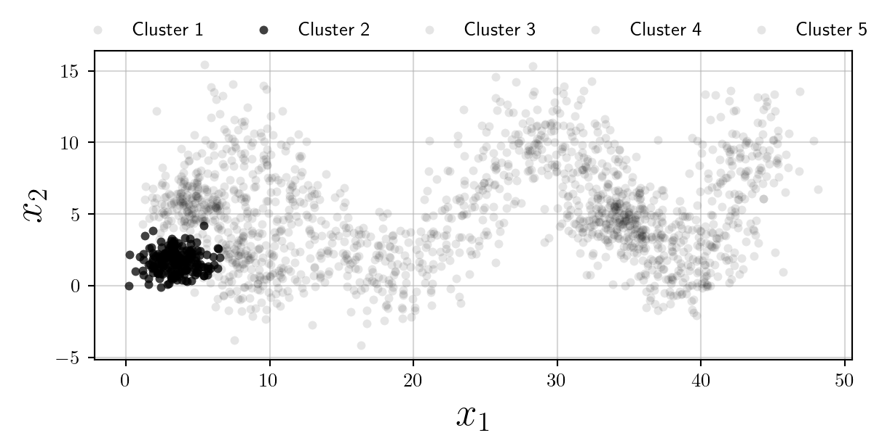
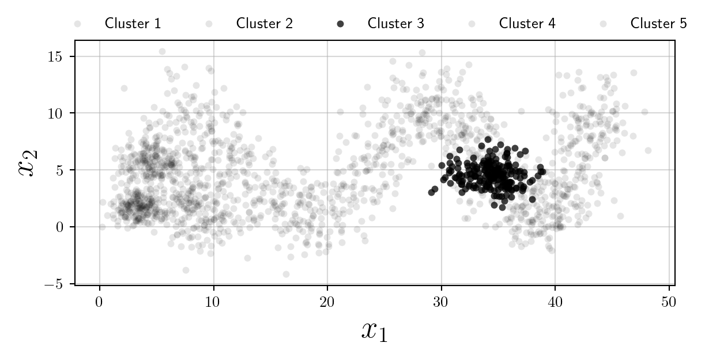
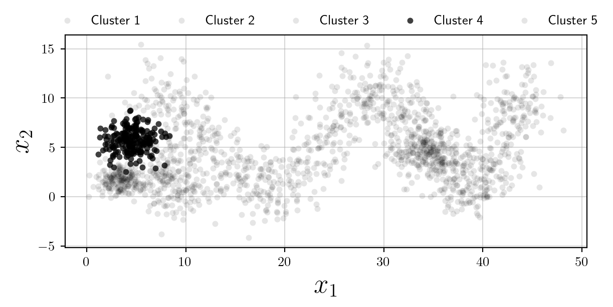
Whilst we have increased the overall number of plots, this is an accessible alternative to using colours, and follows Edward Tufte’s philosophy of Small Multiples.